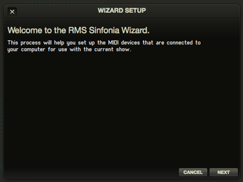
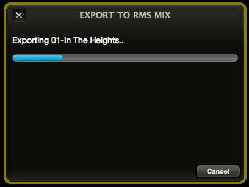

Customization
Sinfonia® can be uniquely tailored to fit the needs of your specific production in many ways. From its modular window display to its ability to load different versions of your show, you will find that almost every situation you would encounter in a live performance setting has been accounted for.
Setup Wizard

Setting up Sinfonia to work with your keyboard and audio device is a very simple process. With your MIDI-enabled keyboard and optional audio interface connected to your computer, select Set-Up Wizard from the Tools menu. This will configure your computer for use with Sinfonia.
Please note, it is important that you have your MIDI keyboard and audio device connected to the computer before you launch Sinfonia for the program to recognize your device!
Configure Keyboard Input
In live performance, Sinfonia is operated via a connected MIDI-enabled keyboard. The specifics of how you connect your keyboard are left up to you, but for suggestions on what you might need, please visit our website at www.rms.biz or visit your local music equipment retailer.
Configure Audio Output
The final screen of the Wizard selects which audio interface device you want Sinfonia to utilize. For example, if you have an M-Audio FireWire 410 connected to your computer you would select that device on the setup screen.
It is possible to run sound out of your computer’s default audio device (i.e. the headphone jack on a laptop) but you will have fewer options for routing the sound, as well as decreased quality of sound when compared to an external audio device. For suggestions on what audio hardware you might need, please read our What You Need article or visit your local music equipment retailer.
New, Save, Save As, Open
One of the most important aspects of Sinfonia® to be familiar with is the Save and Open functions. When you first run Sinfonia® and are about to begin editing, it is a good idea to save your show with a unique name, such as "WSS1-PalmerHS2012" by using the Save As function. Then, as you make edits, be sure to save frequently!
Let's say you are using understudies in your show, and your matinee Maria doesn't quite have the same range as your primary Maria. You can have different versions of the show saved with different transposition settings, so that when it comes time to perform with the understudy, all you have to do is open the appropriate show file and you are ready to go.
(In this situation, it would be best to make all edits except the transposition settings to the primary file, and then create your different versions. This way, you don't have to make edits that apply to both shows twice.)
The New function allows you to create an unedited, default showfile. This will not overwrite your current showfile, which you can access, along with any other showfiles you've created, by using the Open function. Use New if you want to create an alternate version or if you need to restore a song to default settings.
Backup, Load
The Backup and Load functions, found under the Tools menu, deal with your entire show as a project. Whereas Save As and Open pertain to individual files and allow you to create and manage separate versions of the same show, Backup and Load package everything together and allow you to store the project in an alternate location. This is important in case of a catastrophic event with your computer (i.e. lost or stolen, unrecoverable breakdown). It is also useful in case you want to transfer all data from one computer to another.
Very important: it is highly recommended that, after you have made all the edits to your show, you backup the show files to an external drive, such as a USB stick. When you license Sinfonia®, you are given the ability to install the program on multiple machines. You should also have a second computer on hand that is ready to be swapped in in at any time. Technical difficulties do happen, and you don't want to be caught unprepared.
Note: If you are performing more than one title (i.e. Sound of Music and Fiddler on the Roof) you will need to run the Backup command for each show separately.
Import Output Settings
Suppose your Sinfonia implementation involves a 16 channel mix. You've spent a lot of time carefully routing various instruments to all available outputs. It sounds great and takes full advantage of your theatre's sophisticated sound capabilities.
However, you also want to rehearse at home, using your personal computer with just a simple 2-channel stereo mix. Furthermore, you want to continue making non-output related edits at home and use them at the theatre.
There are a few challenges here:
- You can't listen to the 16 channel mix on your 2-channel home system. So at home, the show's output settings need to be reduced. You will be prompted to save a new show file to accommodate this whenever you launch Sinfonia on a system with fewer outputs than the previous launch.
- But if you make any changes that you then want to use at the theatre, you've lost all the careful routing to your 16 channels. This is where the Import Output Settings utility comes in handy.
As the name suggests, Import Output Settings lets you grab the output assignments from a different saved show. So if you load the 2-channel show file onto your theatre's computer, this utility will bring in the 16-channel assignments.
Note: it wlll ignore songs with changed names - and won't know what to do if you added songs. But it should get you most of the way there so that any of these discrepancies can quickly be addressed manually.
Output Test, Instrument Test
When you load up Sinfonia® for a rehearsal or a performance, it is recommended that you run tests to make sure that your hardware is connected properly. This is for the benefit of your theater's sound technician as much as it is for you.
Here is how to run an output test:
- Open the Output Mixer window
- Enter Edit mode
- Toggle the button with the headphone icon above the channel you would like to test
This will send a neutral signal tone through that channel. If you do not hear the tone but can see that an audio signal is being sent through the channel, you should consult with your sound technician. Note that most Sinfonia® installations will probably only use a single stereo channel.
After you have confirmed that your audio hardware is set up correctly, you should perform an Instrument test to check that individual instrument channels are routed correctly.
Here is how to run an instrument test (which is very similar to the output test.)
- Open the Output Mixer window
- Enter Edit mode
- Toggle the button with the headphone icon above the channel you would like to test
This will toggle a repeating 5-note scale on the instrument you have selected.
This is particularly useful if you are using a more complicated, multi-channel audio setup in Sinfonia®. This way, you can check that all the winds are properly routed to channel A, all the strings are properly routed to B and so forth.
Very important: You should run these tests each time you load up Sinfonia®, whether in rehearsal or in performance. You should work in tandem with your theater sound technician to make sure that you have a strong, clean signal.
Window Layouts
As you have probably noticed, Sinfonia® is highly customizable. To make sure that you aren't presented with any unnecessary information during editing and performance, you can hide any windows which you don't need.
A typical performance setup might include the following windows: Transport, Songs, Timeline, Keyboard, Rhythm and Markers. You can reposition (and resize) windows to fit whatever on-screen real-estate you have available with your specific computer.
Window layout settings are saved automatically. When you are ready for performance, just move the windows where you would like them to be and your settings will apply to any file you open.
Note that you can quickly cycle through the open windows in Sinfonia® by using the CTRL-~ command in Windows or CMD-~ in OSX.
Additional Tools
MIDI Reset
The MIDI Reset button sends a simple all-notes-off instruction to Sinfonia®. Use this in the rare occasion where you get a stuck note, or you are hearing any sounds from Sinfonia® that you can't identify.
You can activate the all-notes-off command by either using the MIDI Reset window, or by hitting CTRL-M in Windows or CMD-M in OSX.
RMS SampleSync
When you first install Sinfonia®, you should be prompted to run the SampleSync program. If you need to run SampleSync again, you can do so from the Tools menu. This program makes sure that your local Sinfonia® sound library is completely up-to-date. This can by done in two ways: from local media (such as a DVD drive) or over the internet.
Please note - the full sample library is quite large! If you have a slow internet connection, or do not have internet available for the computer you are using Sinfonia® on, you should contact the RMS offices at 212-620-0774 to request a DVD of the sample library.
It might take a while to install or update the sample library. Please make sure that everything is installed and working correctly before your first rehearsal.
Integration with RMS MIX®
Every installation of Sinfonia® comes bundled with a trial version of RMS Mix®, which is a separate resource that provides sophisticated audio playback from your smartphone or desktop computer. RMS Mix® gives you a very easy way to take your show with you (or give members of your production accompaniment tracks for rehearsal or home practice).
One of the main features of RMS Mix® is the ability for you to export your current Sinfonia® show (with key changes, cuts, and any other edits you might have made) for playback within RMS Mix®! To do so, there are couple steps to follow.
Setting RMS Mix Groupings
Under the "Tools" menu, first select the "RMS Mix Groupings" menu item. This will pop up a window with a list of groupings that RMS Mix will use to categorize instruments.
You can think of them like families of instruments that you will later be able to set levels for (instead of individual instruments). Sinfonia® shows will come with pre-set groupings, but you can make your own by re-naming the groups (by double-clicking) and re-assigning the instruments (again, by double-clicking on the next screen).
Setting Markers
Sinfonia shows all come with pre-programmed markers that will also show up in RMS Mix®. However, by editing the markers within Sinfonia®, you can customize the list of markers in Mix®. Click here for information on editing markers.
Exporting to RMS Mix®
Once you have your Mix Groupings set, you are ready to begin the exporting process.
- Under "Tools", select "Export to RMS Mix"
- Enter your name and email. (they should match the information you used to acquire your Sinfonia® license)
- Enter a description of the export. Possibilities include "General export", "Transposed Mary's parts half step down" or "Slowed dance numbers way down for rehearsal"
- Choose either "Local Export" or "RMS Cloud Service"
- If you are going to be using RMS Mix® on the same computer as Sinfonia®, "Local Export" is much faster
- If you are going to use RMS Mix® (mobile), or if other members of your production will be using the export, choose "RMS Cloud Service"
- Click "Export". Sinfonia will now begin rendering the entire show for use within RMS Mix®.

Please note that you have a limited number of RMS Cloud Service exports. With the trial version of Mix® included with Sinfonia®, you have a single export available to test out the program.
For more information, please visit the RMS Mix® website.
Preferences
General
Audio
If you would like to quickly switch your audio device without running the Set-up Wizard, you can do so here. You can also select the buffer size for Sinfonia® to use. Generally, you want to try and select the smallest buffer possible without getting stutters or other audio artifacts when you play the program. Note that larger buffer sizes with create more "lag" when you are using Sinfonia®.
Rhythm
You can customize the look of the Rhythm window using these options. By default, Sinfonia® will underline the current beat in the window, but if you can change that to be highlighted instead.
You can choose whether or not Sinfonia® highlights the current measure. A highlighted measure will have a blue outline.
Colors
Using these options, you can select what color edits will show up as in the Timeline window. Simply click on the color box next to each type of edit and choose what you would like it to be.
Conclusion
As you can see, Sinfonia® is an extremely powerful piece of software. If you are using it for the first time, don't be overwhelmed! Many of the basic functions are highly intuitive, and the more that you spend time with the program, the easier it will be to both edit the show and to perform with it.
If you have any sort of questions about the program that aren't covered by this manual, please reference the FAQ found at http://www.rms.biz/support/sinfonia/faq.
You can also contact the RMS offices for technical support by calling 212-620-0774.
Just remember, practice makes perfect, and ENJOY THE SHOW!